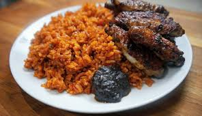

Ghanaian Jollof Rice Recipe

Description
Jollof Rice is Ghana’s culinary pride, a vibrant, one-pot rice dish cooked in a rich tomato-based sauce that’s synonymous with celebration and community. Known for its bold flavors and spicy kick, this Ghanaian staple is often served with grilled chicken or fish, making it a favorite at parties and family gatherings.
Ready in under an hour, this recipe captures the smoky, spicy essence of Ghanaian Jollof. It’s perfect for festive occasions or a cozy night in, bringing West African warmth to your table!
Ingredients
- 2 cups long-grain rice, parboiled
- 3 medium tomatoes, blended
- 1 medium onion, chopped
- 1 red bell pepper, blended
- 1/4 cup vegetable oil
- 2 tablespoons tomato paste
- 1 teaspoon ginger, grated
- 2 cloves garlic, minced
- 1 scotch bonnet pepper, chopped (adjust to taste)
- 1 teaspoon curry powder
- 1 teaspoon dried thyme
- 2 cups chicken stock or water
- 1 bay leaf
- Salt to taste
- 1 cup mixed vegetables (carrots, peas), optional
- Grilled chicken or fish, for serving
Steps
- Heat vegetable oil in a large pot. Sauté onions, garlic, and ginger for 3 minutes until fragrant.
- Add tomato paste and cook for 2 minutes, stirring constantly.
- Stir in blended tomatoes, red bell pepper, and scotch bonnet pepper. Cook for 10 minutes until the sauce reduces.
- Add curry powder, thyme, bay leaf, and chicken stock. Bring to a simmer and season with salt.
- Add parboiled rice and stir to coat. Cover and cook on low heat for 20-25 minutes, adding water if needed.
- Stir in mixed vegetables (if using) and cook for 5 more minutes until rice is fully cooked.
- Remove bay leaf and serve hot with grilled chicken or fish.
Back to Home